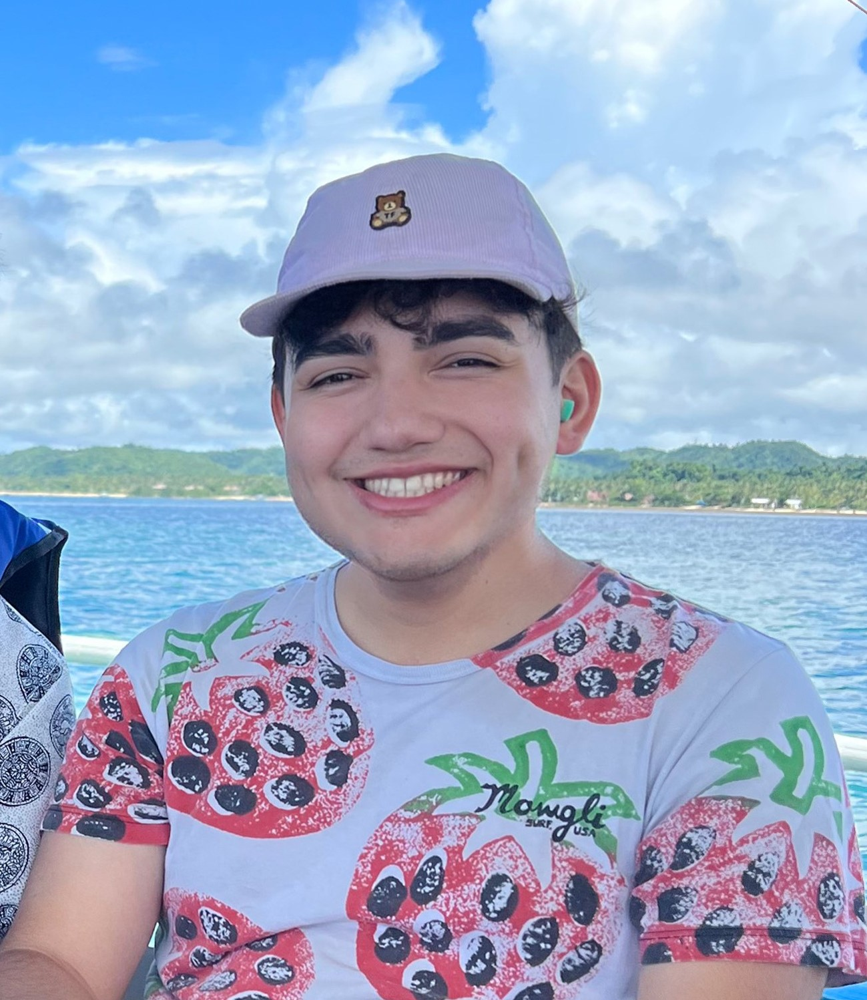

Ryan Alarcon-Stalians | WDD130 Projects
I'm a Junior at BYUI, with three years of community college completed in my hometown of Sacramento, California.
For fun, I enjoy acting, spending time with my friends, traveling the world and learning new languages!
I am currently majoring in CIT, and have a year left until I graduate with my Bachelors.